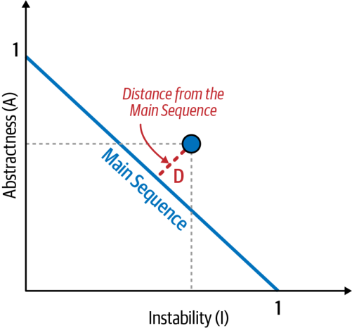
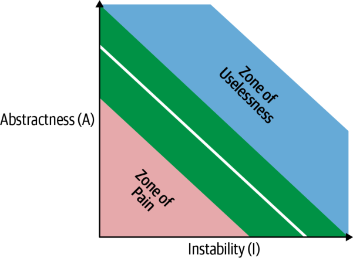

معماران و توسعهدهندگان مدتهاست با مفهوم ماژولاریتی (Modularity) دستوپنجه نرم کردهاند؛ همانطور که از این نقلقول در کتاب Composite/Structured Design (Van Nostrand Reinhold، ۱۹۷۸) برمیآید:
۹۵٪ واژههایی که [دربارهٔ معماری نرمافزار] نوشته شده، صرف ستایش فواید «ماژولاریتی» میشود و دربارهٔ راهِ دستیابی به آن، اگر هم سخنی رفته، بسیار اندک است.
پلتفرمهای گوناگون سازوکارهای متفاوتی برای بازاستفاده از کد دارند، اما همهٔ آنها به شیوهای کدهای مرتبط را در کنار هم و در قالب ماژول (module) گرد میآورند. با اینکه این مفهوم در معماری نرمافزار فراگیر است، تعریفکردنش از آب درنیامده. یک جستوجوی ساده در اینترنت دهها تعریف —بدون هیچ هماهنگی و حتی گاه متناقض— به دست میدهد. این مشکل تازهای نیست. اما از آنجا که تعریف پذیرفتهشدهای وجود ندارد، برای یکدستیِ سراسرِ کتاب ناچاریم وارد میدان شویم و تعریف خودمان را ارائه کنیم.
درک ماژولاریتی و جلوههای گوناگونش در پلتفرمِ توسعهٔ دلخواه، برای معماران حیاتی است. بسیاری از ابزارهایی که برای تحلیل معماری در اختیار داریم —مثل معیارها، توابع برازش و مصورسازیها— بر ماژولاریتی و مفاهیم مرتبط استوارند. ماژولاریتی یک اصل سازماندهنده است. اگر معماری طراحی کند بیآنکه به نحوهٔ پیوندِ قطعات بیندیشد، آن سیستم مشکلات بیشماری پیش رو خواهد داشت. برای نمونهای از فیزیک: سیستمهای نرمافزاری مدلی از سیستمهای پیچیدهاند که به سوی آنتروپی (بینظمی) گرایش دارند. در یک سیستم فیزیکی برای حفظ نظم باید انرژی وارد کرد. سیستمهای نرمافزاری هم همینطورند: معماران باید مدام انرژی صرف کنند تا استواریِ ساختاری را تضمین کنند — امری که هرگز اتفاقی رخ نمیدهد.
حفظِ ماژولاریتیِ خوب نمونهٔ بارزی از تعریفِ ما از یک ویژگی نامشهود (implicit architecture characteristic) است: تقریباً هیچ خواستهٔ پروژهای از معمار نمیخواهد که مرزبندی و ارتباطِ ماژولارِ خوب را تضمین کند، اما پایگاههای کدِ پایدار به همان نظم و یکپارچگیای نیاز دارند که این کار پدید میآورد.
ماژولاریتی در برابر دانهبندی
توسعهدهندگان و معماران اغلب واژههای ماژولاریتی و دانهبندی (Granularity) را بهجای هم به کار میبرند، حال آنکه معنایشان بسیار متفاوت است. ماژولاریتی دربارهٔ تکهتکهکردنِ سیستمها به بخشهای کوچکتر است، مثلاً حرکت از سبک معماری تکپارچه (مثل معماری لایهای سنتی با n لایه) به سبک معماریِ بسیار توزیعشده مانند میکروسرویسها. دانهبندی اما دربارهٔ اندازهٔ همان بخشهاست — اینکه بخش معینی از سیستم (یا سرویس) باید چقدر بزرگ باشد. با این حال، همانطور که در نقلقولی از یکی از مؤلفانمان میبینید، این دانهبندی است که معماران و توسعهدهندگان را به دردسر میاندازد:
ماژولاریتی را در آغوش بگیر، اما از دانهبندی بپرهیز.
دانهبندی باعث میشود سرویسها یا مؤلفهها به یکدیگر کوپل شوند و ضدالگوهای معماریِ پیچیده و دشوارنگهدار بسازند، مثل معماری اسپاگتی (Spaghetti Architecture)، تکپارچههای توزیعشده (Distributed Monoliths)، و توپِ بزرگِ گِلِ توزیعشدهٔ معروف (Big Ball of Distributed Mud). ترفندِ پرهیز از این ضدالگوهای معماری، توجه به دانهبندی و سطح کلیِ کوپلینگ (Coupling) میان سرویسها و مؤلفههاست.
تعریف ماژولاریتی
Merriam-Webster ماژول را اینگونه تعریف میکند: «هریک از مجموعهٔ قطعات استانداردشده یا واحدهای مستقلی که میتوان از آنها برای ساختنِ ساختاری پیچیدهتر بهره گرفت.» اما ما در این کتاب از ماژولاریتی برای توصیفِ گروهی منطقی از کدهای مرتبط بهره میبریم؛ گروهی از کلاسها در یک زبان شیگرا (object-oriented) یا گروهی از توابع در زبانی ساختیافته یا تابعی. توسعهدهندگان معمولاً ماژولها را راهی برای گردآوریِ کدهای مرتبط میدانند. برای نمونه، بسته (package) com.mycompany.customer در Java باید هر آنچه را که به مشتریان مربوط میشود در خود جای دهد. اکثر زبانها سازوکارهایی برای ماژولاریتی دارند (بسته در Java، فضای نام (namespace) در .NET، و همینها).
زبانهای برنامهنویسیِ مدرن انواع و اقسام سازوکارهای بستهبندی دارند و بسیاری از توسعهدهندگان انتخاب میانشان را دشوار مییابند. برای نمونه، در بسیاری از زبانهای مدرن، توسعهدهندگان میتوانند رفتار را در توابع/متدها، کلاسها یا بستهها/فضاهای نام تعریف کنند که هرکدام قواعدِ دید و دامنهٔ خود را دارند. برخی زبانها با افزودنِ سازههای برنامهنویسی، مانند پروتکل فراداده (meta-object protocol)، این وضع را پیچیدهتر میکنند تا سازوکارهای بسطِ بیشتری فراهم کنند.
معماران باید بدانند توسعهدهندگان چیزها را چگونه بستهبندی میکنند، چون بستهبندی پیامدهای مهمی در معماری دارد. برای نمونه، اگر چند بسته محکم به هم کوپل باشند، بازاستفاده از یکی از آنها برای کارهای مرتبط دشوارتر میشود.
بازاستفادهٔ ماژولار پیش از کلاسها
توسعهدهندگانی که در روزگار پیش از زبانهای شیگرا آموزش دیدهاند، شاید از اینکه چرا اینهمه طرحِ جداییِ گوناگون وجود دارد در شگفت بمانند. بخش بزرگی از دلیل به سازگاری رو به عقب (backward compatibility) مربوط میشود — نه به کد، بلکه به شیوهٔ فکرکردنِ توسعهدهندگان.
در مارس ۱۹۶۸، نشریهٔ Communications of the Association for Computing Machinery (ACM) مقالهای از دانشمندِ رایانه Edsger Dijkstra با عنوان «Go To Statement Considered Harmful» منتشر کرد. او استفادهٔ رایج از دستور GOTO — که در آن روزگار در زبانهای برنامهنویسی مرسوم بود — را به سخره گرفت، چون این دستور پرشهای غیرخطی را در دلِ کد ممکن میساخت و استدلالزدن و اشکالزدایی را دشوار میکرد.
مقالهٔ Dijkstra راه را برای دورانِ برنامهنویسیِ ساختیافته (structured programming) در اواسطِ دههٔ ۱۹۷۰ هموار کرد — دورانی که Pascal و C نمایندهٔ آن بودند و توسعهدهندگان را به اندیشیدنِ عمیقتر دربارهٔ چگونگیِ درکنارهمنشستنِ چیزها فرامیخواندند. توسعهدهندگان بهسرعت دریافتند بیشترِ زبانهای برنامهنویسی راه خوبی برای گروهبندیِ منطقیِ چیزهای همجنس ارائه نمیدهند. از همینجا، دورانِ کوتاهِ زبانهای ماژولار در اواسطِ دههٔ ۱۹۸۰ زاده شد، مانند Modula (زبان بعدیِ Niklaus Wirth، خالق Pascal) و Ada. این زبانها سازهٔ برنامهنویسیِ ماژول را در آغوش گرفتند، درست همانطور که امروز بستهها یا فضاهای نام را میاندیشیم (اما بیکلاسها).
دورانِ برنامهنویسیِ ماژولار اواسطِ دههٔ ۱۹۸۰ اما کوتاه بود، چون زبانهای شیگرا محبوب شدند و راههای نوینی برای کپسولهسازی (Encapsulation) و بازاستفاده از کد پیش آوردند. با این حال، طراحان زبان به کاراییِ ماژولها پی بردند و آنها را به شکلِ بستهها و فضاهای نام حفظ کردند. بسیاری از زبانها هنوز قابلیتهای سازگاریای در خود دارند که امروز عجیب به نظر میرسند اما برای پشتیبانی از همین الگوهای برنامهنویسیِ گوناگون افزوده شده بودند. برای نمونه، Java هم از الگوهای ماژولار (از راهِ بستهها و مقداردهیِ اولیه در سطحِ بسته با استفاده از مقداردههای اولیهٔ static) پشتیبانی میکند، و هم از الگوهای شیگرا و تابعی، که هرکدام قواعدِ دامنهبندی و رفتارهای عجیبِ خود را دارند.
در بحثهای این کتاب دربارهٔ معماری، ماژولاریتی را اصطلاحی کلی برای نامیدنِ گروهی مرتبط از کد به کار میبریم: کلاسها، توابع، یا هر گروهبندیِ دیگر. این بدان معنا نیست که جداییِ فیزیکی در کار است؛ فقط جداییِ منطقی. (این تفاوت گاهی اهمیت دارد.) برای نمونه، گردآوردنِ تعداد زیادی کلاس در کنار هم در یک برنامهٔ تکپارچه شاید راحت باشد؛ اما وقتی زمانِ بازآراییِ معماری برسد، کوپلینگی که تقسیمبندیِ سست تقویت میکند میتواند سدِّ راهِ تجزیهکردنِ آن تکپارچه شود. به همین دلیل است که سخنگفتن از ماژولاریتی بهعنوان یک مفهوم، جدای از جداییِ فیزیکیای که پلتفرمِ معینی اجبار یا القا میکند، سودمند است.
ارزش دارد از مفهومِ کلیِ فضای نام نیز سخن بگوییم، که با پیادهسازیِ فنیِ آن در پلتفرمِ .NET —که آن را نیز «فضای نام» مینامند— جداست. توسعهدهندگان اغلب به نامهای دقیق و کاملاً معتبر (fully qualified) برای داراییهای نرمافزاریِ گوناگون (مؤلفهها، کلاسها و همینها) نیاز دارند تا آنها را از یکدیگر تفکیک کنند. بدیهیترین نمونهای که مردم هر روز از آن بهره میبرند همین اینترنت است که بر شناسههای یکتا و سراسریِ متصل به نشانیهای IP استوار است.
اکثر زبانها سازوکارِ ماژولاریتیای دارند که دوگانه به فضای نام هم کار میکند و چیزهایی مانند متغیرها، توابع یا متدها را سازمان میدهد. گاهی ساختارِ ماژول بهصورتِ فیزیکی بازتاب مییابد: برای نمونه، ساختارِ بستههای Java باید ساختارِ دایرکتوریِ فایلهای کلاسِ فیزیکی را منعکس کند.
زبانی بدون تداخل نام: Java 1.0
طراحان اصلی Java تجربهٔ گستردهای در برخورد با تداخل و تعارضِ نامها داشتند که در آن روزگار در پلتفرمهای برنامهنویسی امری رایج بود. Java 1.0 ترفندِ هوشمندانهای به کار برد تا هنگامی که دو کلاس نامِ یکسانی داشتند از ابهام پرهیز شود — مثلاً اگر حوزهٔ مسئله شامل یک «سفارشِ کاتالوگ» و یک «سفارشِ نصب» میشد که هر دو نام order داشتند اما مفاهیم (و کلاسهای) بسیار متفاوتی. راهحلِ طراحان Java ساختنِ سازوکارِ بستهٔ فضای نام بود، همراه با این شرط که ساختارِ دایرکتوریِ فیزیکی باید با نامِ بسته یکی باشد. چون سیستمفایلها اجازه نمیدهند دو فایل با نامِ یکسان در یک دایرکتوری جای گیرند، این کار از ویژگیهای ذاتیِ سیستمعامل برای رفعِ ابهام و تداخلِ نامها بهره برد. در نتیجه، classpath اصلیِ Java فقط شامل دایرکتوریها میشد.
اما همانطور که طراحان زبان دریافتند، واداشتنِ هر پروژه به داشتنِ ساختارِ دایرکتوریِ کامل، آزاردهنده بود، بهویژه آنکه پروژهها بزرگتر میشدند. افزون بر این، ساختنِ داراییهای بازاستفادهپذیر دشوار بود: چارچوبها و کتابخانهها باید «منفجر» میشدند و در ساختارِ دایرکتوری پخش میشدند. در دومین انتشارِ اصلیِ Java (نسخهٔ 1.2، اما با نام Java 2) طراحان سازوکارِ jar را افزودند که به فایلِ آرشیو اجازه میدهد در classpath نقشِ ساختارِ دایرکتوری را بازی کند. در دههٔ بعد، توسعهدهندگان Java بر سرِ درستکردنِ classpath بهعنوان ترکیبی از دایرکتوریها و فایلهای JAR کلنجار رفتند. نیتِ اصلیشان شکسته بود: حالا دو فایل JAR میتوانستند نامهای متعارضی در یک classpath بسازند. به همین دلیل است که توسعهدهندگان Javaِ آن دوران معمولاً خاطراتِ پُرماجرای بسیاری دربارهٔ اشکالزداییِ بارگذار کلاس (class loader) دارند.
سنجشِ ماژولاریتی
چون ماژولاریتی اینهمه اهمیت دارد، معماران به ابزارهایی نیاز دارند که کمکشان کند آن را بهتر دریابند. خوشبختانه پژوهشگران برای همین منظور معیارهای مستقلِ از زبان (language-agnostic) گوناگونی ساختهاند. ما در اینجا روی سه مفهوم کلیدی تمرکز میکنیم: انسجام (Cohesion)، کوپلینگ و همبستگی (Connascence).
انسجام
انسجام به این اشاره دارد که اجزای یک ماژول تا چه حد باید در خودِ همان ماژول جای گیرند. به بیان دیگر، میسنجد که این اجزا تا چه اندازه به یکدیگر مرتبطاند. ماژولِ ایدهآلِ منسجم، ماژولی است که همهٔ اجزایش در کنار هم بستهبندی شده باشند؛ تکهتکهکردنشان نیازمند آن میشود که اجزا از راهِ فراخوانی میانِ ماژولها به هم کوپل شوند تا به نتیجهٔ سودمندی برسیم. این داستانِ هشداردهندهٔ ماژولاریتی در پیوند با انسجام، در نقلقولی از کتاب Structured Design (Pearson، ۲۰۰۸) اینگونه نمود مییابد:
تلاش برای تقسیمِ یک ماژولِ منسجم، جز افزایشِ کوپلینگ و کاهشِ خوانایی، ثمری ندارد.
دانشمندانِ رایانه دامنهای از انسجام را تعریف کردهاند که از بهترین تا بدترین سنجیده میشود:
انسجام کارکردی (Functional Cohesion): هر بخشی از ماژول به بخش دیگر مرتبط است و ماژول هر آنچه را برای کارکردن لازم دارد در خود دارد.
انسجام ترتیبی (Sequential Cohesion): دو ماژول با هم کار میکنند: یکی دادهای را بیرون میدهد که ورودیِ دیگری میشود.
انسجام ارتباطی (Communicational Cohesion): دو ماژول زنجیرهٔ ارتباطیای میسازند که در آن هر یک روی اطلاعاتی کار میکند و/یا به خروجیای کمک میکند. برای نمونه، یکی رکوردی به پایگاهداده میافزاید و دیگری بر پایهٔ همان اطلاعات ایمیلی میسازد.
انسجام رویهای (Procedural Cohesion): دو ماژول باید کدی را در ترتیبی معین اجرا کنند.
انسجام زمانی (Temporal Cohesion): ماژولها بر پایهٔ وابستگیهای زمانی با هم مرتبطاند. برای نمونه، بسیاری از سیستمها فهرستی از چیزهای بهظاهر نامرتبط دارند که هنگام راهاندازی سیستم باید مقداردهیِ اولیه شوند؛ این وظایفِ گوناگون از نظر زمانی با هم منسجماند.
انسجام منطقی (Logical Cohesion): دادههای درونِ ماژولها منطقیاند اما نه کارکردی. برای نمونه، ماژولی را در نظر بگیرید که اطلاعات را از متن، اشیای سریالشده یا جریانها به قالبی دیگر تبدیل میکند. عملیاتهایش مرتبطاند، اما کارکردها بسیار متفاوتاند. نمونهٔ رایجِ این نوع انسجام را تقریباً در هر پروژهٔ Java میتوان یافت: بستهٔ StringUtils، گروهی از متدهای static که روی String کار میکنند اما در غیر این صورت نامرتبطاند.
انسجام اتفاقی (Coincidental Cohesion): اجزای یک ماژول جز در اینکه در یک فایلِ منبعِ واحدند، نامرتبطاند. این منفیترین شکلِ انسجام است.
با وجودِ همهٔ این گونهها، انسجام معیاری کمدقتتر از کوپلینگ است. اغلب، درجهٔ انسجامِ ماژولِ معینی به صلاحدیدِ معمارِ معینی بستگی دارد. این تعریفِ ماژول را در نظر بگیرید:
Order Maintenance
• get customer orders
• cancel customer orders
کدام ساختار درست است؟ مثل همیشه، بستگی دارد:
آیا اینها تنها دو عملیاتِ Order Maintenance هستند؟ اگر آری، شاید بهصرفه باشد که آن عملیاتها را دوباره در Customer Maintenance ادغام کنیم.
آیا انتظار میرود Customer Maintenance بسیار بزرگتر شود؟ اگر آری، شاید توسعهدهندگان باید به دنبالِ فرصتهایی بگردند تا رفتار را به ماژولی دیگر (یا تازه) منتقل کنند.
آیا Order Maintenance به اینهمه دانش دربارهٔ اطلاعاتِ Customer نیاز دارد که جداسازیِ دو ماژول نیازمندِ کوپلینگِ درجهبالایی شود تا کارا باشد؟ (این به همان نقلقولِ پیشینِ Larry Constantine بازمیگردد.)
این پرسشها همان نوع تحلیلِ مصالحه را نشان میدهند که در قلبِ کارِ یک معمارِ نرمافزار جای دارد.
دانشمندانِ رایانه معیارِ ساختاریِ خوبی برای سنجشِ انسجام به دست آوردهاند — بهویژه، «فقدانِ انسجام» (Lack of Cohesion) که با توجه به ذهنیبودنِ این ویژگی، اندکی تعجبآور است. مجموعهمعیارهای شناختهشدهای به نامِ Chidamber and Kemerer Object-Oriented Metrics Suite جنبههای معینی از سیستمهای نرمافزارِ شیگرا را میسنجد. این مجموعه معیارهای رایجِ کدِ بسیاری را در بر میگیرد، مثلاً پیچیدگیِ چرخهای (Cyclomatic Complexity؛ «پیچیدگیِ چرخهای» را در صفحهٔ ۸۴ ببینید) و چندین معیارِ مهمِ کوپلینگ که در «کوپلینگ» (صفحهٔ ۴۴) بحث شدهاند.
Chidamber و Kemerer همچنین معیارِ «فقدانِ انسجام در متدها» (Lack of Cohesion in Methods — LCOM) را ساختهاند که انسجامِ ساختاریِ یک ماژول را میسنجد. نسخهٔ نخست در فرمول ۳-۱ آمده است.
در این فرمول، P برای هر متدی که به فیلدِ اشتراکیِ معینی دسترسی ندارد یک واحد زیاد میشود؛ و Q برای متدهایی که فیلدِ اشتراکیِ معینی را با دیگران شریکاند، یک واحد کم میشود. اگر این فرمولبندی گیجکننده به نظر میرسد، با شما همدردیم — و این فرمول کمکم باز هم پیچیدهتر شده است. دومین تنوع، که در ۱۹۹۶ معرفی شد (و از همینجا نامش LCOM96B شد)، در فرمول ۳-۲ آمده است.
سراغِ باز کردنِ متغیرها و عملگرهای فرمول ۳-۲ نمیرویم، چون توضیحِ مکتوبِ پیش رو روشنتر است. بهاختصار، معیارِ LCOM کوپلینگِ ناخواسته (incidental coupling) را در دلِ کلاسها آشکار میکند. تعریفِ بهتری برای LCOM این است: «مجموعِ مجموعههایی از متدها که از راهِ اشتراکِ فیلدها، با هم مشترک نشدهاند.»
کلاسی را در نظر بگیرید با فیلدهای خصوصی a و b. بسیاری از متدها فقط به a دسترسی دارند و بسیاری دیگر فقط به b. مجموعِ مجموعههایِ متدهایی که از راهِ اشتراکِ فیلدها (a و b) با هم مشترک نشدهاند بالاست؛ بنابراین، این کلاس امتیازِ LCOM بالایی میگیرد که از فقدانِ چشمگیرِ انسجام در متدها خبر میدهد.
سه کلاسِ نشاندادهشده در شکل ۳-۱ را در نظر بگیرید. در اینجا فیلدها تکحرفهایی درونِ هشتضلعیها و متدها بلوکهایی هستند. در کلاس X امتیازِ LCOM پایین است که از انسجامِ ساختاریِ خوب خبر میدهد. اما کلاس Y انسجام ندارد؛ هر یک از جفتهایِ فیلد/متد در کلاس Y میتواند در کلاسی مستقل جای گیرد بیآنکه بر رفتارِ سیستم اثری بگذارد. کلاس Z انسجامی آمیخته نشان میدهد؛ آخرین ترکیبِ فیلد/متد میتواند به کلاسی مستقل بازآرایی شود.
شکل ۳-۱. معیارِ LCOM که فیلدها را با هشتضلعیها و متدها را با مربعها نشان میدهد.
معیارِ LCOM برای معمارانی سودمند است که پایگاههای کد را برای بازآرایی، مهاجرت یا درکِ آن تحلیل میکنند. کلاسهای ابزاریِ مشترک هنگامِ جابهجاییِ معماری دردسرساز میشوند. با بهرهگیری از معیارِ LCOM، معماران میتوانند کلاسهایی را بیابند که بهطورِ اتفاقی کوپل شدهاند و اصلاً نباید از همان ابتدا یک کلاسِ واحد میبودند.
بسیاری از معیارهای نرمافزاری کاستیهای جدی دارند و LCOM هم از این قاعده مستثنا نیست. تنها چیزی که این معیار میتواند بیابد فقدانِ ساختاریِ انسجام است؛ هیچ راهی ندارد تشخیص دهد آیا قطعاتِ معینی از نظرِ منطقی به هم میخورند یا نه. این موضوع به قانون دومِ معماری نرمافزار ما بازمیگردد: چرا مهمتر از چگونه است.
کوپلینگ
خوشبختانه ابزارهای بهتری برای تحلیلِ کوپلینگ در پایگاههای کد داریم. این ابزارها بخشی بر نظریهٔ گراف استوارند: چون فراخوانیها و بازگشتهای متدها گرافِ فراخوانی (call graph) میسازند، میتوان آن را بهشیوهٔ ریاضی تحلیل کرد. کتابِ Edward Yourdon و Larry Constantine با نامِ Structured Design: Fundamentals of a Discipline of Computer Program and Systems Design (Prentice-Hall، ۱۹۷۹) بسیاری از مفاهیمِ بنیادین را تعریف کرد، از جمله معیارهای کوپلینگِ ورودی (afferent coupling) و کوپلینگِ خروجی (efferent coupling). کوپلینگِ ورودی شمارِ اتصالهای ورودی به یک قطعهٔ کد (مؤلفه، کلاس، تابع و همینها) را میسنجد. کوپلینگِ خروجی، اتصالهای خروجی به قطعاتِ کدِ دیگر را میسنجد. تقریباً برای هر پلتفرمی ابزارهایی هست که به معماران اجازه میدهد ویژگیهای کوپلینگِ کد را تحلیل کنند.
چرا اینهمه شباهتِ نام میانِ معیارهای کوپلینگ؟
چرا دو معیارِ حیاتی در جهانِ معماری که مفاهیمی متضاد را نمایندگی میکنند، تقریباً همینقدر همناماند و تنها تفاوتشان در واکههایی است که آوایشان بیش از همه به هم میماند؟ این اصطلاحات از کتاب Structured Design آمدهاند. Yourdon و Constantine با وامگرفتنِ مفاهیمی از ریاضیات، اصطلاحِ امروزیِ afferent coupling و efferent coupling را رواج دادند. در اصل بهتر بود آنها را incoming coupling و outgoing coupling بنامیم، اما مؤلفان بیشتر به تقارنِ ریاضی مایل بودند تا به وضوح. توسعهدهندگان چندین یادیار ابداع کردهاند. برای نمونه، a پیش از e در الفبای انگلیسی میآید، درست بهترتیبی که incoming پیش از outgoing میآید. حرفِ e در efferent با حرفِ نخستِ exit یکی است و به یادآوردنِ اینکه نمایانگرِ اتصالهای خروجی است کمک میکند.
معیارهای هسته
با اینکه کوپلینگِ مؤلفهها بهخودیِخود برای معماران ارزشمند است، چند معیارِ مشتق (derived metric) دیگر امکانِ ارزیابیِ عمیقتری فراهم میکنند. معیارهایی که در این بخش بررسی میشوند ساختهٔ مهندسِ نرمافزار Robert C. Martin هستند و در بیشترِ زبانهای شیگرا کاربردی گسترده دارند.
میزانِ انتزاع (Abstractness) نسبتِ مصنوعاتِ انتزاعی —کلاسهای انتزاعی (abstract classes)، واسطها (interfaces) و همینها— به مصنوعاتِ عینی (concrete artifacts)، یعنی پیادهسازیها، است. معیارِ میزانِ انتزاع، درجهٔ انتزاعِ یک پایگاه کد را در برابرِ پیادهسازی میسنجد. برای نمونه، در یک سرِ این طیف پایگاه کدی قرار میگیرد که هیچ انتزاعی ندارد و فقط یک تابعِ واحدِ غولآساست (مثلاً همهچیز در یک متدِ main()). سرِ دیگرِ طیف پایگاه کدی است با انتزاعهایی بیش از اندازه، بهطوری که توسعهدهندگان بهسختی درمییابند اجزا چگونه به هم وصل میشوند. (برای نمونه، مدتی طول میکشد تا توسعهدهندگان بفهمند با کلاسِ انتزاعیِ AbstractSingletonProxyFactoryBean چه کنند، آن هم با اینهمه لایهٔ انتزاع و نامی چنین مبهم.)
فرمولِ میزانِ انتزاع در فرمول ۳-۳ آمده است.
فرمول ۳-۳. میزانِ انتزاع
A = \frac{\sum m^a}{\sum m^c + \sum m^a}
معماران میزانِ انتزاع را با محاسبهٔ نسبتِ مجموعِ مصنوعاتِ انتزاعی به مجموعِ مصنوعاتِ عینی و انتزاعی به دست میآورند. در این فرمول، ma نمایندهٔ عناصرِ انتزاعیِ ماژول (واسطها یا کلاسهای انتزاعی) و mc نمایندهٔ عناصرِ عینی (کلاسهای غیرانتزاعی) است. این معیار به دنبالِ همان ملاکهاست. سادهترین راه برای مجسمکردنِ این معیار، در نظر گرفتنِ برنامهای است با ۵٬۰۰۰ خط کد که همه در یک متدِ main() جای گرفتهاند. صورتِ کسرِ میزانِ انتزاعِ آن ۱ و مخرجش ۵٬۰۰۰ است و امتیازی نزدیک به صفر به دست میدهد. این معیار نسبتِ انتزاعها در کد را اینگونه میسنجد.
معیارِ مشتقِ دیگر، ناپایداری (Instability)، نسبتِ کوپلینگِ خروجی به مجموعِ کوپلینگِ خروجی و ورودی تعریف میشود که در فرمول ۳-۴ نشان داده شده است.
فرمول ۳-۴. ناپایداری
I = \frac{C^e}{C^e + C^a}
در این فرمول، Ce نمایندهٔ کوپلینگِ خروجی و Ca نمایندهٔ کوپلینگِ ورودی است.
معیارِ ناپایداری، نوسانپذیری (volatility) یک پایگاه کد را تعیین میکند. پایگاه کدی که درجهٔ بالایی از ناپایداری نشان میدهد، به سببِ کوپلینگِ بالا هنگامِ تغییر آسانتر میشکند. برای نمونه، اگر کلاسی برای واگذاریِ کار، کلاسهای بسیار زیادی را فراخوانی کند، با تغییرِ یک یا چند متدِ فراخواندهشده، کلاسِ فراخواننده بهشدت در معرضِ شکستن خواهد بود.
فاصله از دنبالهٔ اصلی
یکی از معدود معیارهای جامعی که معماران برای ساختارِ معماری در اختیار دارند، فاصله از دنبالهٔ اصلی (Distance from the Main Sequence) است: معیاری مشتق بر پایهٔ ناپایداری و میزانِ انتزاع که در فرمول ۳-۵ نشان داده شده است.
فرمول ۳-۵. فاصله از دنبالهٔ اصلی
D = \left| A + I - 1 \right|
در این فرمول، A همان میزانِ انتزاع و I همان ناپایداری است.
توجه کنید که میزانِ انتزاع و ناپایداری هر دو کسرهایی هستند که حاصلشان همواره میان ۰ و ۱ قرار میگیرد (جز در برخی موارد حدی). از همین رو، رسمِ نمودارِ رابطهٔ آنها نموداری را پدید میآورد که در شکل ۳-۲ میبینید.
شکل ۳-۲. دنبالهٔ اصلی رابطهٔ آرمانی میانِ میزانِ انتزاع و ناپایداری را تعریف میکند.
معیارِ فاصله، رابطهای آرمانی میانِ میزانِ انتزاع و ناپایداری را فرض میگیرد؛ کلاسهایی که نزدیکِ این خطِ آرمانی قرار میگیرند، آمیزهای سالم از این دو دغدغهٔ رقیب را نشان میدهند. برای نمونه، رسمِ یک کلاسِ معین روی نمودار به توسعهدهندگان امکان میدهد معیارِ فاصله از دنبالهٔ اصلی را محاسبه کنند که در شکل ۳-۳ نشان داده شده است.

شکل ۳-۳. فاصلهٔ نرمالشده از دنبالهٔ اصلی برای یک کلاسِ معین
معیارِ شکل ۳-۳ کلاسِ مورد نظر را روی نمودار میبرد و سپس فاصلهاش را از خطِ آرمانی میسنجد. هرچه به خط نزدیکتر باشد، کلاس متوازنتر است. کلاسهایی که بیش از اندازه به گوشهٔ بالا-راست میروند، وارد چیزی میشوند که معماران آن را منطقهٔ بیفایدگی (Zone of Uselessness) مینامند: کدی که بیش از اندازه انتزاعی است، بهسختی به کار میآید. در مقابل، کدی که به گوشهٔ پایین-چپ میافتد، همانطور که در شکل ۳-۴ آمده، وارد منطقهٔ درد (Zone of Pain) میشود: کدی با پیادهسازیِ بیش از اندازه و انتزاعِ ناکافی، شکننده و دشوارنگهدار میشود.

شکل ۳-۴. منطقههای بیفایدگی و درد
بسیاری از پلتفرمها ابزارهایی برای محاسبهٔ این معیارها فراهم میکنند که به معماران کمک میکنند هنگامِ تحلیلِ پایگاههای کد با آنها آشنا شوند، برای مهاجرت آماده شوند یا بدهی فنی را ارزیابی کنند.
محدودیتهای معیارها
با اینکه صنعت چند معیارِ سطحِ کد دارد که بینشِ ارزشمندی فراهم میکنند، ابزارهای ما در مقایسه با ابزارهای تحلیلِ دیگر رشتههای مهندسی بسیار زمخت و کمدقتاند. حتی معیارهایی که مستقیماً از ساختارِ کد به دست میآیند، به تفسیر نیاز دارند. برای نمونه، پیچیدگیِ چرخهای («پیچیدگیِ چرخهای» را در صفحهٔ ۸۴ ببینید) پیچیدگی را در پایگاههای کد میسنجد، اما این معیار نمیتواند میانِ پیچیدگیِ ذاتی (essential complexity) —کد پیچیده است چون مسئلهٔ زیربنایی پیچیده است— و پیچیدگیِ عارضی (accidental complexity) —کد پیچیدهتر از آن است که باید باشد— تمایز بگذارد. تقریباً همهٔ معیارهای سطحِ کد به تفسیر نیاز دارند، اما همچنان سودمند است که برای معیارهای حیاتیای مانند پیچیدگیِ چرخهای خطِ مبنا (baseline) تعیین شود تا معماران بتوانند ارزیابی کنند پایگاه کد کدام نوع را نشان میدهد. چگونگیِ برپاییِ همین آزمونها را در «حاکمیت و توابع برازش» (Governance and Fitness Functions؛ صفحهٔ ۸۶) بررسی میکنیم.
کتابِ Structured Design نوشتهٔ Yourdon و Constantine، که در ۱۹۷۹ منتشر شد، پیش از رواجِ زبانهای شیگرا نگاشته شده است. این کتاب در عوض بر سازههای برنامهنویسیِ ساختیافته، مانند توابع (نه متدها)، تمرکز دارد. همچنین گونههای دیگری از کوپلینگ را تعریف میکند که به سببِ طراحیِ زبانهای برنامهنویسیِ مدرن منسوخ شدهاند. برنامهنویسیِ شیگرا مفاهیمِ دیگری را پیش کشید که بر کوپلینگِ ورودی و خروجی سوار میشوند، از جمله واژگانی دقیقتر برای توصیفِ کوپلینگ به نامِ همبستگی.
همبستگی
کتابِ What Every Programmer Should Know about Object-Oriented Design نوشتهٔ Meilir Page-Jones (Dorset House، ۱۹۹۶) زبانی دقیقتر برای توصیفِ انواعِ گوناگونِ کوپلینگ در زبانهای شیگرا پدید آورد. همبستگی معیارِ کوپلینگی مانند کوپلینگِ ورودی و خروجی نیست؛ بلکه زبانی است که به معماران کمک میکند انواعِ گوناگونِ کوپلینگ را دقیقتر توصیف کنند (و برخی پیامدهای رایجِ هر نوع را بهتر بفهمند).
دو مؤلفه با یکدیگر همبستگی دارند (connascent) اگر تغییر در یکی، برای حفظِ درستیِ کلیِ سیستم، اصلاحِ دیگری را ایجاب کند. Page-Jones دو نوع همبستگی را از هم جدا میکند: ایستا و پویا.
همبستگی ایستا
همبستگی ایستا (static connascence) به کوپلینگ در سطحِ کدِ منبع اشاره دارد (در برابرِ کوپلینگ در زمانِ اجرا، که در «همبستگی پویا» در صفحهٔ ۵۰ به آن پرداختهایم). معماران همبستگی ایستا را درجهای میدانند که چیزی از راهِ کوپلینگِ ورودی یا خروجی کوپل شده است. همبستگی ایستا چند نوع دارد:
همبستگی نام (Connascence of Name): چند مؤلفه باید بر سرِ نامِ یک موجودیت توافق داشته باشند.
نامِ متدها و پارامترهای متد رایجترین راهِ کوپلشدنِ پایگاههای کد و مطلوبترینِ آنهاست، بهویژه با وجودِ ابزارهای مدرنِ بازآرایی که تغییرِ نام در سراسرِ سیستم را به کاری پیشپاافتاده بدل کردهاند. برای نمونه، توسعهدهندگان دیگر نامِ یک متد را در پایگاه کدِ فعال دستی تغییر نمیدهند، بلکه با ابزارهای مدرن نامِ متد را بازآرایی میکنند و تغییر در سراسرِ پایگاه کد اعمال میشود.
همبستگی نوع (Connascence of Type): چند مؤلفه باید بر سرِ نوعِ یک موجودیت توافق داشته باشند.
این نوع همبستگی به گرایشِ رایج در بسیاری از زبانهای دارای نوعدهیِ ایستا (statically typed) اشاره دارد که متغیرها و پارامترها را به نوعهای مشخصی محدود میکنند. با این حال، این قابلیت تنها از آنِ زبانهای دارای نوعدهیِ ایستا نیست؛ برخی زبانهای دارای نوعدهیِ پویا (dynamically typed) نیز نوعدهیِ انتخابی ارائه میکنند که نمونهٔ شاخصش Clojure و Clojure Spec است.
همبستگی معنا (Connascence of Meaning): چند مؤلفه باید بر سرِ معنای مقادیرِ معینی توافق داشته باشند. به آن همبستگی قرارداد (Connascence of Convention) نیز میگویند.
رایجترین و آشکارترین نمونهٔ این نوع همبستگی در پایگاههای کد، استفاده از اعدادِ سختکدشده (hardcoded) بهجای ثابتهاست. برای نمونه، در برخی زبانها رایج است که جایی تعریف شود int TRUE = 1; int FALSE = 0. تصور کنید اگر کسی این دو مقدار را جابهجا کند، چه دردسرهایی پیش میآید.
همبستگی موقعیت (Connascence of Position): چند مؤلفه باید بر سرِ ترتیبِ مقادیر توافق داشته باشند.
این مشکلی است که در مقادیرِ پارامترِ فراخوانیِ متدها و توابع پیش میآید، حتی در زبانهایی که نوعدهیِ ایستا دارند. برای نمونه، اگر توسعهدهندهای متدِ void updateSeat(String name, String seatLocation) را بسازد و آن را با مقادیرِ updateSeat("14D", "Ford, N") فراخوانی کند، معنا نادرست است، حتی اگر نوعها درست باشند.
همبستگی الگوریتم (Connascence of Algorithm): چند مؤلفه باید بر سرِ الگوریتمِ معینی توافق داشته باشند.
نمونهٔ رایجِ همبستگی الگوریتم زمانی رخ میدهد که توسعهدهندهای الگوریتمِ درهمسازیِ امنیتیای تعریف میکند که باید هم روی سرور و هم روی کلاینت اجرا شود و نتایجِ یکسانی برای احرازِ هویتِ کاربر به دست دهد. بدیهی است که این نشانهٔ درجهٔ بالایی از کوپلینگ است: اگر جزئیاتِ هر یک از دو الگوریتم تغییر کند، دستدهی (handshake) دیگر کار نخواهد کرد.
همبستگی پویا
نوعِ دیگری از همبستگی که Page-Jones تعریف میکند همبستگی پویا (dynamic connascence) است که فراخوانیها را در زمانِ اجرا تحلیل میکند. انواعِ همبستگی پویا عبارتاند از:
همبستگی اجرا (Connascence of Execution): ترتیبِ اجرای چند مؤلفه اهمیت دارد.
این کد را در نظر بگیرید:
email = new Email();
email.setRecipient("foo@example.com");
email.setSender("me@me.com");
email.send();
email.setSubject("whoops");
این کد درست کار نمیکند، چون برخی ویژگیها باید به ترتیبِ مشخصی مقداردهی شوند.
همبستگی زمانبندی (Connascence of Timing): زمانبندیِ اجرای چند مؤلفه اهمیت دارد.
نمونهٔ رایجِ این نوع همبستگی، شرایطِ رقابتی (race condition) است که از اجرای همزمانِ دو ریسمان (thread) پدید میآید و بر نتیجهٔ عملیاتِ مشترک اثر میگذارد.
همبستگی مقادیر (Connascence of Values): چند مقدار به یکدیگر وابستهاند و باید با هم تغییر کنند.
موردی را در نظر بگیرید که توسعهدهندهای مستطیلی را با تعریفِ چهار نقطه برای گوشههایش تعریف کرده است. برای حفظِ یکپارچگیِ این ساختمانِ داده، توسعهدهنده نمیتواند یکی از نقطهها را دلبخواه تغییر دهد بیآنکه اثرش را بر نقطههای دیگر بسنجد تا شکلِ مستطیل حفظ شود.
موردِ رایجتر و مشکلسازتر به تراکنشها مربوط میشود، بهویژه در سیستمهای توزیعشده. در سیستمی که با پایگاهدادههای جداگانه طراحی شده، هرگاه کسی بخواهد مقداری واحد را در همهٔ پایگاهدادهها بهروز کند، مقادیر یا باید همه با هم تغییر کنند یا هیچکدام تغییر نکنند.
همبستگی هویت (Connascence of Identity): چند مؤلفه باید به موجودیتی واحد ارجاع دهند.
نمونهٔ رایجِ همبستگی هویت، دو مؤلفهٔ مستقل است که باید ساختمانِ دادهای مشترک، مانند یک صفِ توزیعشده، را با هم به اشتراک بگذارند و بهروز کنند.
ویژگیهای همبستگی
همبستگی چارچوبی تحلیلی برای معماران و توسعهدهندگان است و برخی از ویژگیهایش کمک میکنند آن را خردمندانه به کار ببریم. این ویژگیها عبارتاند از:
قدرت (Strength): معماران قدرتِ همبستگی یک سیستم را با این میسنجند که توسعهدهنده تا چه اندازه آسان میتواند کوپلینگِ آن را بازآرایی کند. همانطور که در شکل ۳-۵ نشان داده شده، برخی انواعِ همبستگی آشکارا از بقیه مطلوبترند. بازآرایی به سوی انواعِ بهترِ همبستگی میتواند ویژگیهای کوپلینگِ یک پایگاه کد را بهبود دهد.
معماران باید همبستگی ایستا را بر پویا ترجیح دهند، چون توسعهدهندگان میتوانند آن را با تحلیلِ سادهٔ کدِ منبع تشخیص دهند و ابزارهای مدرن بهبودِ همبستگی ایستا را کاری پیشپاافتاده کردهاند. برای نمونه، میتوان همبستگی معنا را با بازآرایی به همبستگی نام بهبود داد: یعنی ساختنِ یک ثابتِ نامدار بهجای یک مقدارِ جادویی (magic value).
شکل ۳-۵. قدرتِ همبستگی میتواند راهنمای خوبی برای بازآرایی باشد.
محلیبودن (Locality): محلیبودنِ همبستگی یک سیستم میسنجد که ماژولهایش در پایگاه کد تا چه اندازه به یکدیگر نزدیکاند. کدِ نزدیک (کدی در همان ماژول) معمولاً اشکالِ بیشتر و قویترِ همبستگی را دارد تا کدِ دورتر (در ماژولها یا پایگاههای کدِ جداگانه). به بیان دیگر، اشکالی از همبستگی که وقتی مؤلفهها از هم دورند نشانهٔ کوپلینگِ نامطلوباند، وقتی مؤلفهها به هم نزدیکترند پذیرفتنیاند. برای نمونه، اگر دو کلاس در یک ماژول همبستگی معنا داشته باشند، آسیبِ کمتری به پایگاه کد میزند تا وقتی که آن کلاسها در ماژولهای جداگانه باشند.
وقتی مؤلف نخستین بار این نکته را منتشر کرد، معماران تا حدِ زیادی از اهمیتش بیخبر بودند. به زبانِ امروزی، او پیشنهاد میکند که معماران دامنهٔ جزئیاتِ پیادهسازی (کوپلینگِ بالا) را تا جایی که عملی است محدود کنند؛ همان توصیهای که از ایدهٔ زمینهٔ محدود (bounded context) در طراحیِ حوزهمحور (Domain-Driven Design — DDD) برمیآید. نکتهٔ معماریِ هر دو یکی است: کوپلینگِ پیادهسازی را محدود کنید. Page-Jones اصلِ طراحیِ خوبی را توصیف کرد که بعدها از راهِ DDD بهطورِ کاملتری دوباره مطرح شد («زمینهٔ محدودِ طراحیِ حوزهمحور» را در صفحهٔ ۹۷ از فصل ۷ ببینید).
ایدهٔ خوبی است که قدرت و محلیبودن را با هم در نظر بگیریم. اشکالِ قویترِ همبستگی درونِ یک ماژول، «بوی کد» (code smell) کمتری دارند تا همان همبستگی وقتی در جاهای دور از هم پخش شده باشد.
درجه (Degree): درجهٔ همبستگی به اندازهٔ اثرِ تغییرِ یک کلاس در ماژولی معین مربوط میشود: آیا این تغییر بر چند کلاس اثر میگذارد یا بر بسیاری؟ درجههای پایینترِ همبستگی به تغییراتِ کمتری در کلاسها و ماژولهای دیگر نیاز دارند و از این رو آسیبِ کمتری به پایگاههای کد میزنند. به بیان دیگر، اگر معمار فقط چند ماژول داشته باشد، همبستگی پویای بالا فاجعه نیست. اما پایگاههای کد رو به رشدند و مشکلی کوچک را، از نظرِ دامنهٔ تغییر، به همان نسبت بزرگتر میکنند.
Page-Jones در What Every Programmer Should Know about Object-Oriented Design سه رهنمود برای بهرهگیری از همبستگی در بهبودِ ماژولاریتیِ سیستم پیش مینهد:
همبستگی کلی را با شکستنِ سیستم به عناصرِ کپسولهشده به حداقل برسانید.
هر همبستگی باقیماندهای را که از مرزهای کپسولهسازی عبور میکند به حداقل برسانید.
همبستگی را درونِ مرزهای کپسولهسازی به حداکثر برسانید.
Jim Weirich، نوآورِ افسانهایِ معماری نرمافزار که مفهومِ همبستگی را دوباره بر سرِ زبانها انداخت، در سخنرانیاش با عنوانِ «Connescence Examined» در کنفرانسِ Emerging Technologies for the Enterprise در سالِ ۲۰۱۲، دو قاعدهٔ عالی ارائه میکند:
قاعدهٔ درجه: اشکالِ قویِ همبستگی را به اشکالِ ضعیفترِ همبستگی تبدیل کنید.
قاعدهٔ محلیبودن: هرچه فاصلهٔ میانِ عناصرِ نرمافزار بیشتر میشود، از اشکالِ ضعیفترِ همبستگی استفاده کنید.
یادگیریِ همبستگی به همان دلیلی برای معماران سودمند است که یادگیریِ الگوهای طراحی: همبستگی زبانی دقیقتر برای توصیفِ انواعِ گوناگونِ کوپلینگ فراهم میکند. برای نمونه، معمار میتواند به کسی بگوید: «به سرویسی نیاز داریم که فقط یک نمونه از آن وجود داشته باشد»، یا میتواند بگوید: «به یک سرویسِ Singleton نیاز داریم.» الگوی طراحیِ Singleton بافت و راهحلِ یک مسئلهٔ رایج را بهخوبی در نامی ساده کپسوله میکند.
به همین ترتیب، هنگامِ بازبینی کد، معمار میتواند به توسعهدهندهای بگوید: «یک ثابتِ رشتهایِ جادویی را وسطِ اعلانِ متد نگذار؛ بهجایش آن را بهصورتِ یک ثابت بیرون بکش.» یا میتواند بگوید: «این کد همبستگی معنا دارد؛ آن را به همبستگی نام بازآرایی کن.»
از ماژولها تا مؤلفهها
ما در سراسرِ این کتاب واژهٔ ماژول را بهعنوانِ نامی کلی برای بستههای کدِ مرتبط به کار میبریم. با این حال، بیشترِ معماران از ماژولها با عنوانِ مؤلفهها (components) یاد میکنند: بلوکهای سازندهٔ کلیدیِ معماری نرمافزار. این مفهومِ مؤلفه، و تحلیلِ متناظرش دربارهٔ جداییِ منطقی یا فیزیکی، از نخستین روزهای علومِ رایانه وجود داشته است، اما توسعهدهندگان و معماران هنوز برای رسیدن به نتایجِ خوب دستوپنجه نرم میکنند.
در فصل ۸ دربارهٔ استخراجِ مؤلفهها از حوزههای مسئله بحث خواهیم کرد، اما پیش از آن باید به جنبهٔ بنیادینِ دیگری از معماری نرمافزار بپردازیم: ویژگیهای معماری و دامنهٔ آنها.